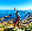
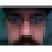

Over the last fifteen years, we’ve had many amazing contributors to the project. Below you’ll find “privatized” photos of our team, their handles, and a bit about who they are and what they do, or have done, for the project.

We’d also like to recognize the many contributions of patches, bug reports, feedback and ideas we have received from members of our larger community.
paulali
- Developer
- @paulali:matrix.org
Nathan Freitas (n8fr8)
")
- Founder and Director
- Developer on Orbot, Haven, ProofMode, ObscuraCam, Keanu and More!
- @n8fr8:matrix.org
- PGP: BBE20FD6DA48A3DD4CC7DF41A801183E69B37AA9
nk
- Grant Admin
- @nzambik:matrix.org
threeletteracronym
- Programmer
- @threeletteracronym:matrix.org
abelxluck
- Hacker & Researcher
- Developer on Guardian ops suite
- @abel:neo.keanu.im
- PGP: 9185813DDCCD789E5D4BA51B884B649C340C81F4
bim
- Programmer
- @lexithesponge:matrix.org
HStill
- Project Manager, Research and UX
- @hstill:matrix.org
daveo
- Operations Operative
- Partnership, products and for-hire services
_hc
- Hacker & Researcher
- @eighthave:matrix.org
- PGP: EE6620C7136B0D2C456C0A4DE9E28DEA00AA5556
rosa
- Operations Operative
- Partnership, products and for-hire services
Emeritus
lee
- Hacker & Phreaker
- Lead Developer on Open Secure Telephony Network/Ostel
vanevery
- Guru of All Things Android
mark
- Creative Technologist
- Strategy and Project Management
jlhads
- Advisor, Evangelist, Alpha User Extraordinaire
- Grant writing, speaking, meeting and other outreach
dj
- Design, User Experience and Strategy
- Product Manager on Orbot, Gibberbot and beyond
miron
- Futurist, computer geek, & entrepreneur